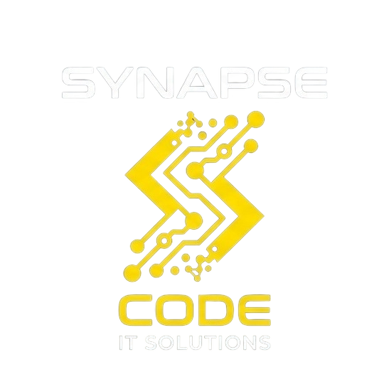

Főoldal
Rólunk
Sikereink
Céljaink
Nézet
Üdvözlünk a Synaps Code weboldalán!

Sikereink
Facebook
– A leghíresebb social media platform, első nagyobb sikerünk
Spotify
– Saját vágyainknak is eleget tudtunk tenni, de másoknak is átadtuk
YouTube
– Megmutattuk, hogy az emberek nemcsak nézni, hanem megosztani is szeretnék a saját videóikat
Netflix
– A szórakozást vittük közelebb az emberekhez, amikor és ahol csak szeretnék
Tiktok
– A rövid videók segítségével új formát adtunk a szórakozásnak és a kreativitásnak
PlayStation
– A játékot nemcsak szórakozásként, hanem közös élményként is közelebb hoztuk az emberekhez
Céljaink
Egy saját AI fejlesztése
– Szeretnénk, ha testreszabott segédünk lenne a fejlesztéseinkben
Nemzetközi terjeszkedés
– Célunk, hogy idővel más országokban is megjelenjünk és új piacokat érjünk el.
Környezettudatos működés
– Hosszú távú célunk, hogy a technológiai fejlődés mellett a környezetünkre is odafigyeljünk.
Saját hardver fejlesztése
– A szoftverek mellett saját technológiai eszközök létrehozásával is szeretnénk bővíteni a cégünket.
Junior program indítása
– Szeretnénk a fiatal fejlesztőknek lehetőséget adni a fejlődésre, és cégünk profiljának frissítésére.
További fejlesztések
– Folyamatosan szeretnénk új dolgokat létrehozni.